4 Antibiotic testing the in the laboratory
Learning objectives
ddd
ddd
ddd
4.1 Introduction
Antimicrobial susceptibility testing is a crucial process in the field of microbiology and infectious diseases. It involves determining the effectiveness of various antibiotics or antimicrobial agents against specific bacteria or other microorganisms. By conducting this testing, healthcare professionals can make informed decisions about which antibiotics or treatments will be most effective in combating infections. This testing is also performed routinely on large collections of isolates to detect epidemiological trends of resistance (surveillance).
4.2 The concept of antimicrobial spectrum
The activity spectrum of an antibacterial drug is related to the range of bacteria it can target. A narrow-spectrum antimicrobial specifically targets certain subsets of bacterial pathogens. For instance, some narrow-spectrum drugs only work against gram-positive bacteria, while others only work against gram-negative bacteria. When the pathogen causing an infection is known, it is generally best to use a narrow-spectrum antimicrobial to minimize harm to the normal microbiota.
The bacterial cell wall plays a critical role in defining the spectrum of antimicrobial activity.
Gram-positive bacteria have a cell wall consisting of many layers of peptidoglycan totalling 30–100 nm in thickness(Figure 4.1). These peptidoglycan layers are commonly embedded with teichoic acids (TAs), carbohydrate chains that extend through and beyond the peptidoglycan layer. TA is thought to stabilize peptidoglycan by increasing its rigidity. TA also plays a role in the ability of pathogenic gram-positive bacteria such as Streptococcus to bind to certain proteins on the surface of host cells, enhancing their ability to cause infection.
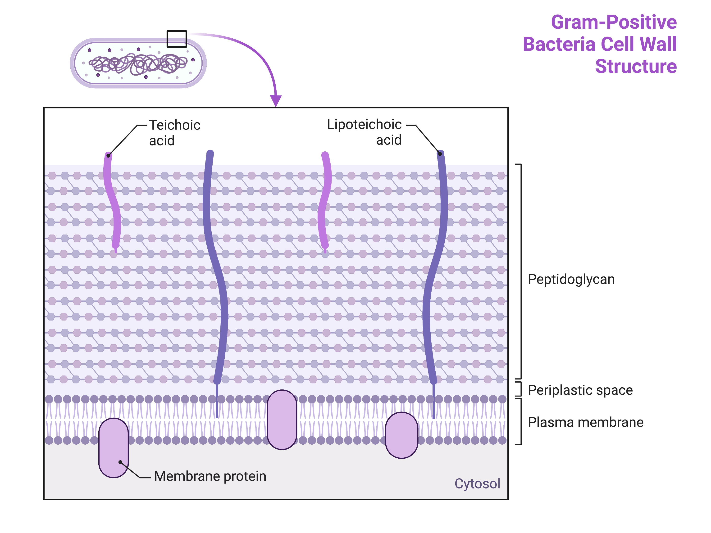
Figure 4.1: Gram positive bacterial cell wall. Source: www.biorender.com In addition to peptidoglycan and TAs, bacteria of the family Mycobacteriaceae have an external layer of waxy mycolic acids in their cell wall. These bacteria are referred to as acid-fast, since acid-fast stains must be used to penetrate the mycolic acid layer for purposes of microscopy
Gram-negative bacteria have a much thinner layer of peptidoglycan (no more than about 4 nm thick) than gram-positive cells, and the overall structure of their cell envelope is more complex (Figure 4.2). In gram-negative cells, a gel-like matrix occupies the periplasmic space between the cell wall and the plasma membrane, and there is a second lipid bilayer called the outer membrane, which is external to the peptidoglycan layer. This outer membrane is attached to the peptidoglycan by murein lipoprotein.
The outer leaflet of the outer membrane contains the molecule lipopolysaccharide (LPS), which functions as an endotoxin in infections involving gram-negative bacteria, contributing to symptoms such as fever, haemorrhaging, and septic shock.
Each LPS molecule is composed of Lipid A, a core polysaccharide, and an O side chain that is composed of sugar-like molecules that comprise the external face of the LPS (Figure 4.2). The composition of the O side chain varies between different species and strains of bacteria. Parts of the O side chain called antigens can be detected using serological or immunological tests to identify specific pathogenic strains like Escherichia coli O157:H7, a deadly strain of bacteria that causes bloody diarrhoea and kidney failure.
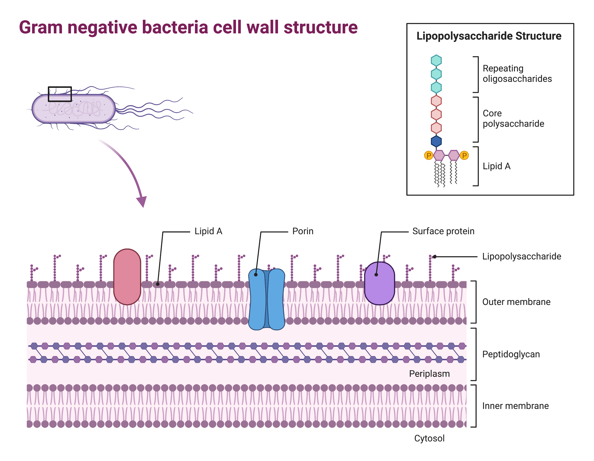
4.2.1 The Gram-stain test
The Gram stain procedure is a widely used differential staining technique that was developed by Danish microbiologist Hans Christian Gram in 1884. It enables the differentiation of bacteria based on the characteristics of their cell walls. Even today, it remains one of the most commonly employed staining methods in microbiology and guiding antibiotic therapy. The steps involved in the Gram stain procedure are as follows (Figure 4.3):
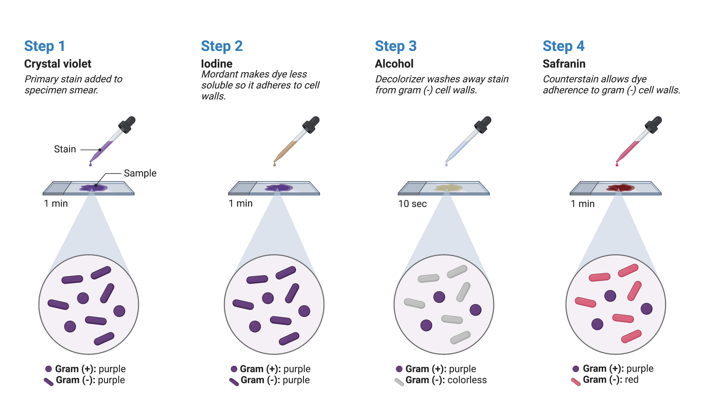
The first step involves applying crystal violet, a primary stain, to a heat-fixed smear. This primary stain imparts a purple colour to all the cells on the slide.
Gram’s iodine, an essential component called a mordant, is added as the second step. A mordant acts as a fixing agent, and in this context, Gram’s iodine acts as a trapping agent that forms complexes with the crystal violet. These complexes accumulate in the thick peptidoglycan layers of the cell walls.
The third step involves adding a decolourising agent, which is typically ethanol or an acetone/ethanol solution. The decolourising agent has a different effect on cells with varying thicknesses of peptidoglycan layers. Those cells with thick peptidoglycan layers are less affected by the decolourising agent, allowing them to retain the purple crystal violet dye and appear purple. In contrast, cells with thinner peptidoglycan layers are more easily decoulorised and lose the crystal violet stain, appearing colourless.
Finally, a secondary counterstain, usually safranin, is applied. Safranin stains the decolourised cells pink, allowing them to be more easily visualized. However, cells that still contain the retained crystal violet dye are less noticeable since the purple colour masks the pink stain of the counterstain.
Clinicians use Gram stain results prior to definitive pathogen identification along with knowledge of the most likely pathogens associated with the clinical presentation/differential diagnosis of infection in the patient to select antimicrobial therapy. Spectrum of activity tables such as those compiled in the Sanford Guide and accessible in cell phone applications can be consulted to select an antimicrobial therapy with appropriate spectrum of activity (Figure 4.4).
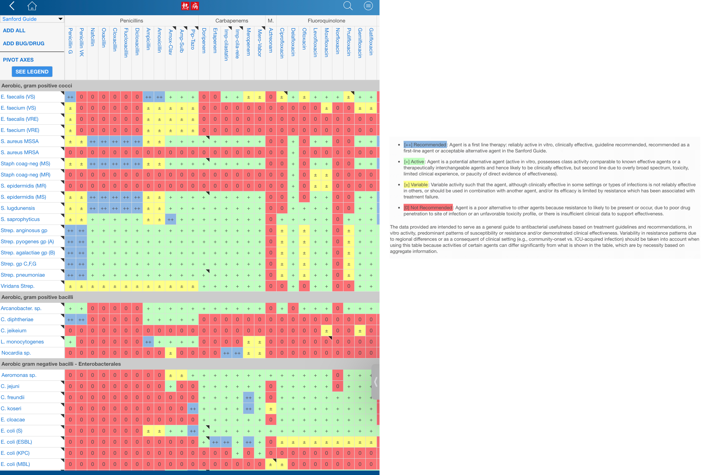
4.2.2 Why not prescribe the broadest-spectrum antimicrobial for all infections?
Some broad-spectrum antibiotics can target a wide variety of bacterial pathogens, including both gram-positive and gram-negative species. Broad-spectrum antibiotic therapy may be used as empiric therapy while waiting for laboratory identification of the infecting pathogen.
Broad-spectrum antimicrobials are frequently used for polymicrobic infections (infections with multiple bacterial species), infectious in immunocompromised patients (where the spectrum of potential pathogens is larger), and for prophylactic prevention of infections for certain surgeries or invasive procedures. In some cases, a broad-spectrum antimicrobial may be chosen to treat an infection when a narrow-spectrum drug fails due to the development of drug resistance by the target pathogen.
However, using broad-spectrum antimicrobials comes with the risk of also targeting a wide range of normal microbiota (Figure 4.5). This increases the risk of a superinfection, which is a secondary infection that occurs in a patient who already has a pre-existing infection. Therefore, we generally want to use the narrowest spectrum of activity appropriate for the type of infection for the shortest period as possible.
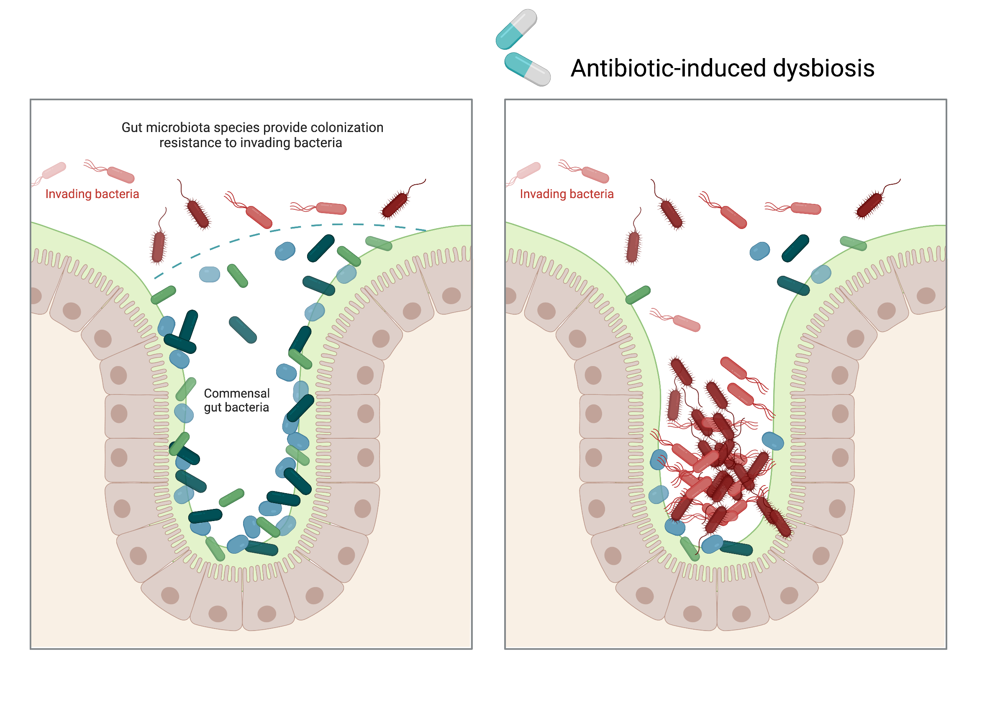
Superinfection can happen when the antibacterial intended for the original infection kills off the protective microbiota, allowing another pathogen that is resistant to the antibacterial to multiply and cause a secondary infection. Examples of superinfection that can develop due to antimicrobial usage include yeast infections (candidiasis), multidrug resistant gram-positive and gram-negative pathogens, and pseudomembranous colitis caused by Clostridium difficile, which can be life-threatening.
4.3 Bactericidal versus bacteriostatic activity
Antibacterial drugs can have different effects on target bacteria. Some drugs are bacteriostatic, meaning they temporarily inhibit bacterial growth, but the bacteria can resume growth once the drug is eliminated. On the other hand, bactericidal drugs actually kill the target bacteria.
The choice between using bacteriostatic or bactericidal drugs depends on factors such as the type of infection and the patient’s immune status. In patients with strong immune defences, both types of drugs can be effective in achieving a clinical cure. However, for immunocompromised patients, using a bactericidal drug is crucial for successfully treating infections.
In the case of life-threatening infections like acute endocarditis or meningitis, bactericidal antibiotics are generally favoured. However, in recent years the dogma of “bactericidal activity” has been questioned by some infectious diseases specialists as limited data support the superiority of outcomes for regimens defined as bactericidal versus bacteriostatic in them microbiology laboratory.
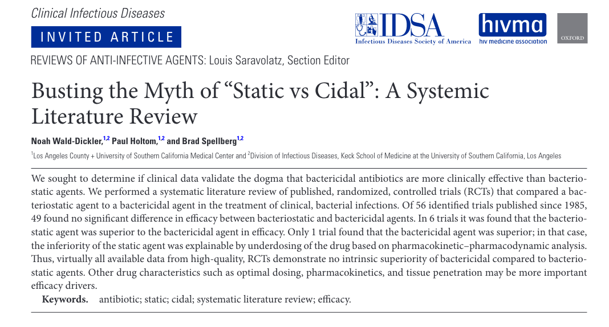
Is the commonly held belief that bactericidal activity is crucial for certain infections actually challenged by clinical outcome data, as suggested by this analysis conducted by Wald-Dickler and colleagues?
4.4 Antimicrobial susceptibility testing- The minimum inhibitory concentration (MIC)
Antimicrobial susceptibility testing (AST) can be broadly characterized as phenotypic vs. genotypic methods. The tests are further characterized whether the results produce qualitative or quantitative results.
Phenotypic assays detect bacterial cell growth arrest or death in the presence of an antimicrobial therefore allowing true susceptibility testing and can be categorized into either minimal inhibitory con- centration (MIC) or non-MIC methods. Quantitative MIC methods (e.g., broth dilution, agar dilution, and agar gradient diffusion) express results numerically, whereas qualitative non-MIC methods (e.g., disk diffusion) allow for broad categorization by interpretive criteria into susceptible, susceptible-dose dependent, intermediate, non-susceptible or resistant interpretive categories without an MIC value.
Regardless of the method used, traditional phenotypic AST is the final step in the time-consuming and labour-intensive process of clinical microbiology. From specimen collection to Gram stain, organism identification, and AST, the median time is 19 hours, 43 hours, and 65 hours, respectively, for the standard blood culture processing workflow using conventional methods.
Genotypic AST identifies resistance genes via molecular methods and serves as a surrogate for AST, although susceptibility must be confirmed phenotypically. The main advantage of genotypic AST is rapidity in detection of resistance mechanisms that can allow for earlier modification of therapy.
The mean inhibitory concentration (MIC) is a measure of the effectiveness of an antimicrobial agent in inhibiting the growth of microorganisms. It represents the lowest concentration of a specific antimicrobial substance that prevents visible growth of a microorganism after a specified period of incubation-typically 24 hours.
4.4.1 Broth-based MIC testing methods.
Alexander Fleming developed the first liquid media dilution-based testing method and was a pioneer in the field of antimicrobial susceptibility testing (AST) more than a decade before the penicillin he discovered was available for clinical use. Manual broth microdilution (BMD) is one of the gold standard reference methods per the Clinical and Laboratory Standards Institute (CLSI) and other organizations, such as the U.S. Food and Drug Administration (FDA) and the European Committee on Antimicrobial Susceptibility Testing (EUCAST).
To determine the MIC using broth-based methods, a standardized inoculum of the bacterial is prepared. The inoculum of bacteria is prepared using a turbidity meter instrument against a turbidity standard (typically 0.5 McFarland which represents approximately 1-2 x 108 colony forming units (CFU)/mL of inoculum when plated on agar. After dilution, the typical final test inoculum is 5x 105 CFU/mL. The intial inoculum can be confirmed by serial dilution if necessary (Figure 4.6). This standard inoculum is then inoculated into a series of tubes that contain serial dilutions of the antimicrobial agent (Figure 4.7). After the inoculum is added the tubes are incubated at 35°C for at least 18 hours and inspected for growth (Figure 4.8). Growth may also be interpreted visually or by using a spectrophotometer or similar device to detect turbidity or a colour change if an appropriate biochemical substrate that changes colour in the presence of bacterial growth is also included in each well.
The test can be performed in testubes (macrobroth) or microtitre trays (microbroth). The latter is more common because it is simplier to setup and wastes less drug and media.
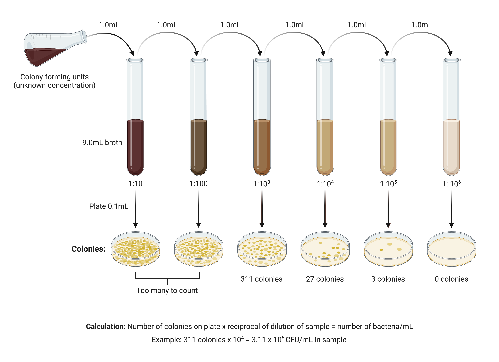
The lowest concentration at which no visible growth is observed is considered the MIC. When samples of clear wells (no visible growth) are plated on antibiotic-free agar, the first clear well that fails to produce growth on agar is considered the mean bactericidal concentration (MBC). This does not mean the MBC culture endpoint is sterile, no organisms, rather the remaining viable inoculum at the MBC endpoint is sufficiently low (i.e. less than 1x 102 CFU/mL) such that plating on drug-free agar with a sterile loop (10 μL) will not result in measurable CFUs.
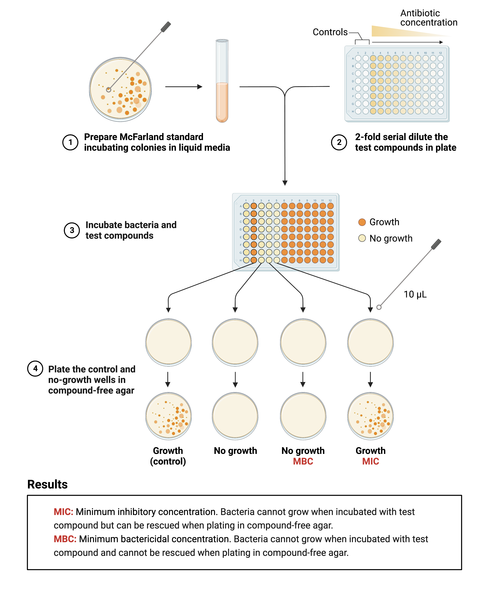
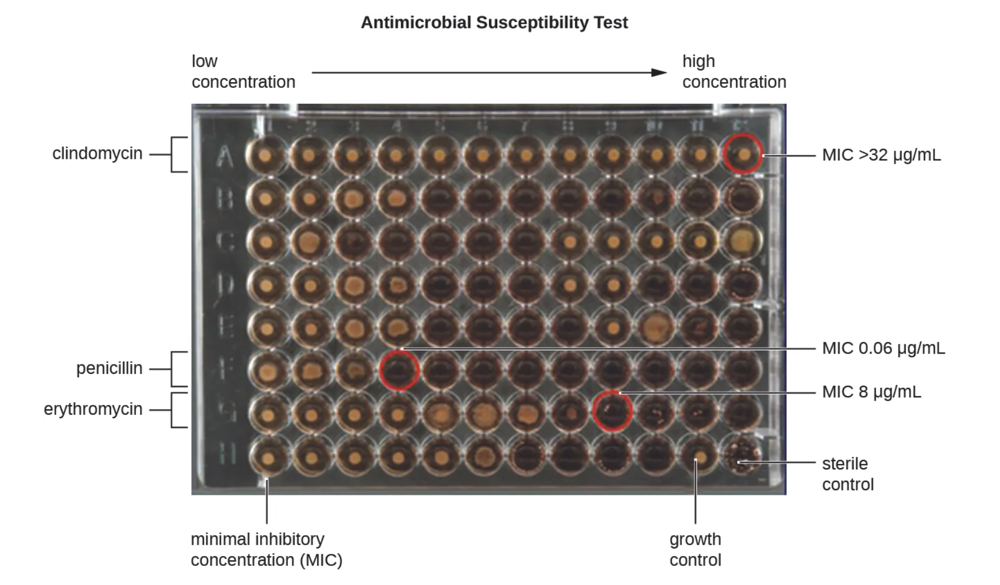
Disk diffusion (Kirby-Bauer) agar-based methods are simpler to perform and can produce reliable MICs, but are not as quantitative and broth-based methods and may not be suitable for some antibiotics that do not diffuse well through the agar.
This method involves placing a disk containing a fixed concentration of antimicrobial onto an agar plate that has been inoculated with standardized bacteria. After incubation, the diameter of the zone of inhibition is measured. While disk diffusion is accurate, it does not provide an MIC value, which is important for dose optimization in certain cases. Therefore, disk zone measurements must be correlated with MIC values obtained through other methods, such as BMD, when establishing and updating clinical breakpoints to minimize errors in categorization (i.e. susceptible, intermediate or resistant).
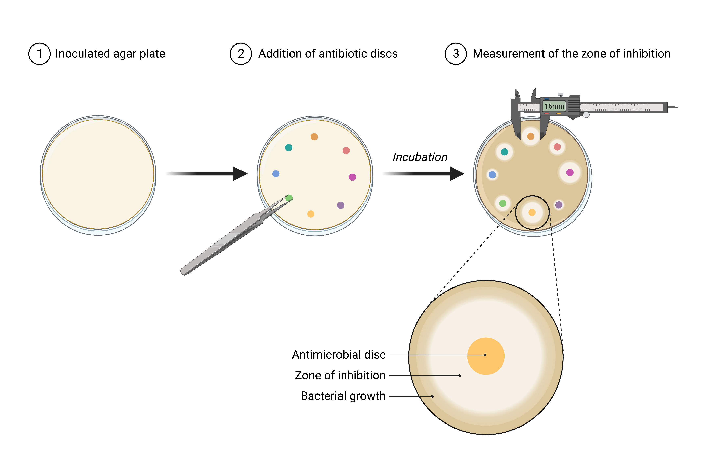
A method related to the Kirby-Bauer method uses strips imprinted with a gradient of antimicrobials. Several commercial products (Etest, Biomerieux: Liofilchem, Liofilchem diagnsotica) are available. The Etest is an alternative method for determining MIC (Figure 4.10). It combines the Kirby-Bauer disk diffusion test and dilution methods. Instead of circular disks, plastic strips with a gradient of an antibacterial are placed on an agar plate inoculated with bacteria. The drug diffuses into the agar, creating an elliptical zone of inhibition. The intersection of the zone with the drug gradient indicates the MIC. Multiple antimicrobials can be tested simultaneously.
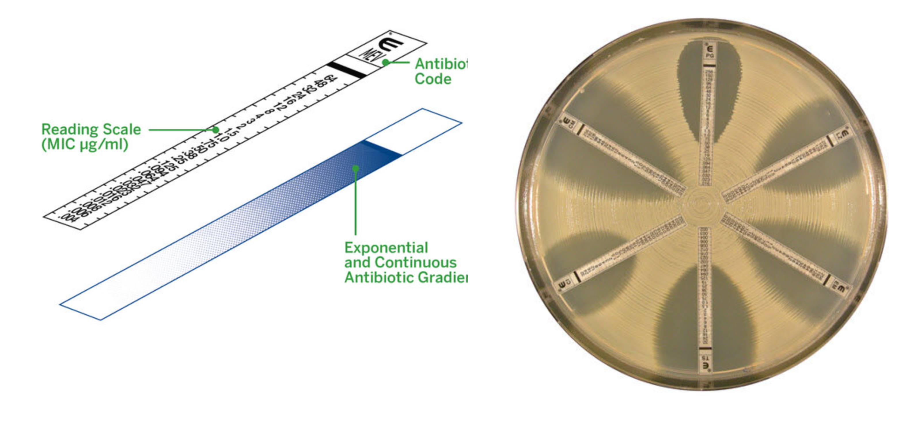
Agar based methods are less labour-intensive (but non quantitative). They are frequently used for screening susceptibility in urine or other normally sterile fluids.
4.5 Automated antimicrobial susceptibility testing
Due to the impracticality of manual BMD for routine AST, the majority of clinical microbiology laboratories use commercial automated conventional phenotypic AST platforms. These platforms employ a miniaturized broth microdilution-based method and automated pathogen identification, AST, and interpretation within a single system.
The most common platforms include:
MicroScan WalkAway (Beckman Coulter Inc.) Youtube video of technology. In this video a microbiology technician shows the steps of how the test is performed.
PhoenixTM (Becton, Dickinson and Company)Youtube video of technology
SensititreTM (ThermoFisher) Youtube video of technology
Vitek2 (bioMérieux) Youtube video of the techology
Each of the four systems mentioned can fully automate AST from inoculation to interpretation, although they employ different methodologies that yield varying time to results. The MicroScan, Phoenix, and Sensititre Systems directly measure MICs by observing bacterial growth in the presence of each antimicrobial included in the panel’s wells. The Vitek2 system calculates, rather than measures, MICs by comparing the growth of the test isolate to a reference isolate with a known MIC using a limited range of antimicrobial drug dilutions.
Right something here about rapid AST
4.6 Rapid phenotypic antimicrobial susceptibility testing
| Test | Technology | Time to result | Regulation status |
|---|---|---|---|
| Phenotest BC | Time-lapse imaging of bacterial cells under dark-field microscopy. Morphological and kinetic changes analyzed. | 7 h | US FDA cleared |
| Alfred | Light scattering to detect bacterial growth in liquid culture broth. | 3–5 h | CE-IVD |
| dRast | Time-lapse imaging of bacterial cells on micropatterned plastic microchips. | 6 h | CE-IVD |
| Reveal AST | Sensor array for volatile organic compounds emitted during microorganism growth. | 4.5 h | CE-IVD |
| ASTAR (AliFAX) | Time-lapse imaging of bacterial growth in broth | 3–6 h | |
| FastInov | Flow cytometry applying fluorescent dyes that reveal cell damage during treatment. | 1.4 h | CE-IVD |
| Lifescale | Mass measurement using a microcantilever. | 4 h | CE-IVD |
Write something here
T2 bacteria/T2 Candida Youtube video on technology
MALDI-TOF Rapid AST Youtube video on technology
Incubation of microorganisms with antimicrobials (or as a growth control without antimicrobials) does not need an additional microtiter plate or another incubation container, because it is performed directly on spots of a MALDI target in form of microdroplets. Another fundamental feature of the method is that read-out is performed by MALDI-TOF MS, in contrast to turbidity reading with reference methods (10, 11). Microorganisms are multiplying without addition of an antimicrobial (growth control), and their amplified bio- mass is detected by MALDI-TOF MS after the incubation. The same holds true for resistant microorganisms that are growing despite the presence of the antimicrobial. In contrast, microorganisms that are susceptible to the tested antimicrobial are inhibited, and their originally inoculated, not-amplified biomass cannot be detected by a MALDI-TOF MS instrument (Fig. 2). The sensitive detection of biomass by MALDI-TOF MS allows incubation times to be considerably shortened in comparison to the reference method.
4.6.1 Genetic detection for rapid detection of resistance markers
Writer something here as an introduction
| Test | Organisms identified | Resistance genes |
|---|---|---|
| Biofire BCID2 (Biofire, Salt Lake City, UT) | 9 Gram-positive bacterial targets 14 Gram-negative bacterial targets 7 yeast targets | Carbapenemases blaIMP blaKPC blaOXA−48−like blaNDM blaVIM Colistin resistance mcr-1 ESBL blaCTX−M Methicillin mecA/C MREJ Vancomycin vanA/B |
| Verigene BC-GN (Luminex, Austin, TX) | 9 Gram-negative bacterial targets | Carbapenemases blaIMP blaKPC blaOXA−48−like blaNDM blaVIM ESBL blaCTX−M |
| Verigene BC-GP (Luminex) | 13 Gram-positive bacterial targets | Methicillin mecA MREJ Vancomycin vanA/B |
| ePlex® BCID-GP (GenMark, Carlsbad, CA) | 20 Gram-positive bacterial targets “pan” Gram-negative target “pan” Candida target | Methicillin mecA MREJ Vancomycin vanA/B |
| ePlex® BCID-GN (GenMark) | 21 Gram-negative targets “pan” Gram-positive target “pan” Candida target | Carbapenemases blaIMP blaKPC blaOXA−48/OXA−23 blaNDM blaVIM ESBL blaCTX−M |
| ePlex® BCID-FP (GenMark) | 15 Fungal targets | None |
| Xpert® MRSA/SA BC (Cepheid, Sunnydale CA) | 1 Gram-positive target | Methicillin mecA |
Rapid antimicrobial susceptibility testing methods. Adapted from Banerjee and Humphries (Banerjee and Humphries 2021) {#tbl-genetic} CE-IVD- Certified- in vitro diagnostic European Union.